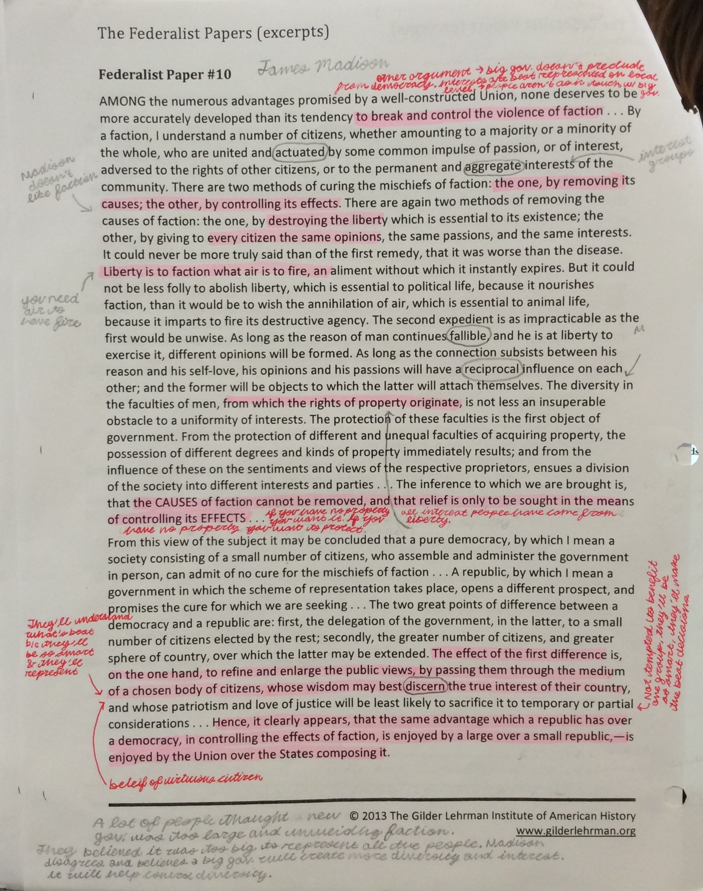

Home Page
History
At the beginning of the year, I didn't really understand how to write an annotation. For most of the year, I was just doing summaries and I was only aiming for 3's and 2's. If I tried to do analysis, it was only one or two sentences long. My old school never taught annotations, and it took me a while to understand how to do them. I didn't recieve a 4, until the middle of the year. I feel like I have grown a lot in this area. I went from getting 2's and 3's, to now, getting 3's and 4's. Before, my annotations were only summaries and now, my annotations and like two sentences of summaries and the rest is analysis.
Here is an example of my first annotations ever, compared to my annotations now:
Here is an example of some of my notes from class:

This is an example of one my pages from a worksheet I took during class about the Federalists and Anti-Federalists documents!!